Префектура Киото · город Киото · еда
Сладости Киото с пряностями: шесть старых лавок, где в сладкое кладут перец и корицу
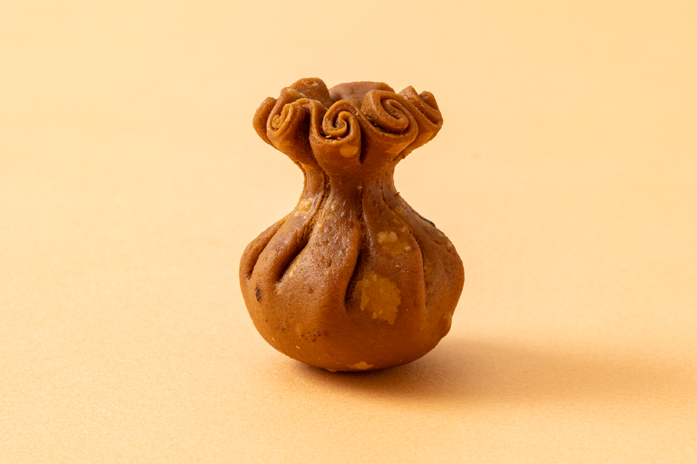
Киото называют святой землёй японских сладостей, и вполне возможно, что расцвету местного кондитерского дела помогли пряности. Мы прошли по шести лавкам, где сладкое делают с благовониями, японским перцем сансё, корицей, листьями сисо, кунжутом и юдзу.
Пряности
С чего начиналась киотская сладость
В Киото сладостей столько, что в них легко потеряться: старейшие в стране, сладости на долголетие, именитые изделия с долгой историей и придумки мастеров, которые любят удивлять. Если присмотреться к их составу, окажется, что у многих в основе пряность. Иногда это благовоние, иногда японский перец сансё, корица, лист сисо, кунжут или цитрус юдзу.
Мы собрали шесть лавок, где такие сладости делают до сих пор: от храмового подношения, рецепт которого не меняется больше тысячи лет, до юдзу, наполненного ёканом.
Древнейшая
Kameya Kiyonaga: подношение с семью ароматами
Лавка Kameya Kiyonaga стоит напротив святилища Ясака-дзиндзя в Гионе. Её история начинается с кондитерской «Камэя Дзихэй», открытой в 1617 году, и сегодня дело ведёт уже 17-е поколение семьи. В 1857 году сёгунат, чтобы сохранить киотские сладости, сделанные по старым придворным правилам, ограничил число кондитерских высшего разряда до 248. Из них лишь 28 получили право поставлять сладости ко двору императора. Такие лавки называли «кё-окасидокоро», и Kameya Kiyonaga одна из них.
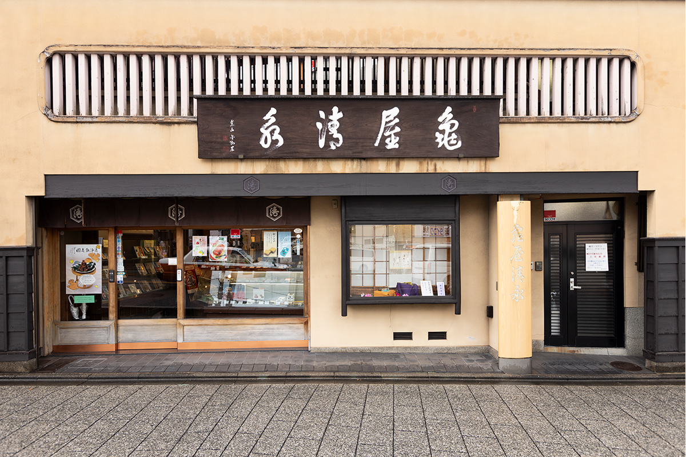
Здесь до сих пор делают «Сэйдзё канкидан», который называют прообразом японских и киотских сладостей. Его форма не менялась веками. Странное название можно перевести примерно так: «круглое подношение богам и буддам с чистым сердцем, символ радости».
В древности сладостями в Японии служили в основном орехи и фрукты, а большие перемены, как принято считать, пришли в эпоху Нара (710–794). Монах Кукай (774–835) отправился в Китай с японским посольством и привёз оттуда не только эзотерический буддизм школы Сингон и его обряды, но и танские сладости для подношений. С этого, по преданию, и началось развитие японских сладостей, и «Сэйдзё канкидан» одна из тех привезённых сладостей. Рецепт лавке передал высокий монах храма Энряку-дзи на горе Хиэй, монастыря, тесно связанного с эзотерическим буддизмом. Сегодня Kameya Kiyonaga единственная в Японии лавка, которая продаёт «Сэйдзё канкидан».
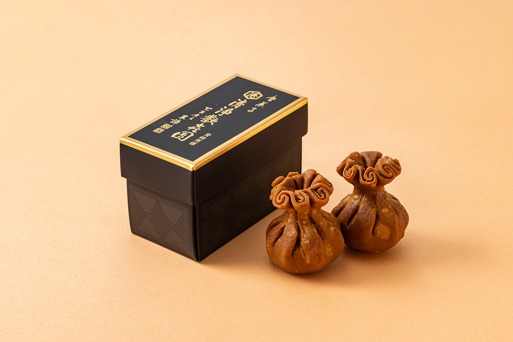
У милой формы тоже есть смысл. Мешочек изображает кошелёк с золотом, а восемь складок наверху означают восьмилепестковый лотос. Тесто из рисовой и пшеничной муки обёрнуто вокруг гладкой бобовой пасты и обжарено в кунжутном масле. В пасту замешаны очищающие благовония: сандал и борнеол, которые используют в ароматах и сегодня, корица и ещё несколько ингредиентов, всего семь. Их добавляют не ради вкуса, а для очищения, ведь это подношение.
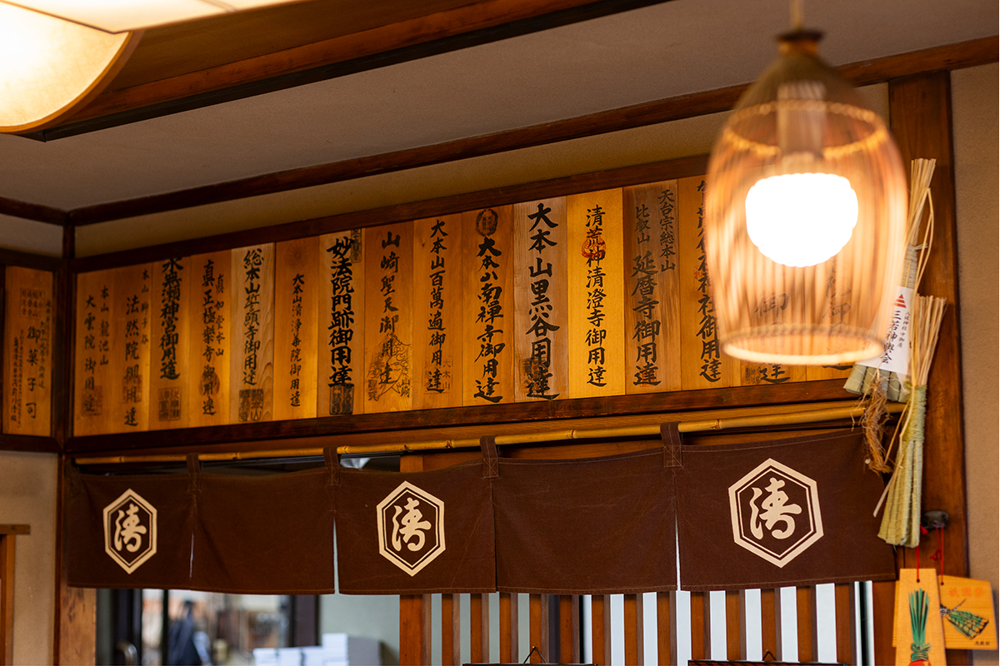
Когда-то благовония были доступны только знати, а простой человек и мечтать о них не мог. Теперь их можно попробовать на вкус. Надкусываешь хрустящее тесто, и вместе со сладостью бобовой пасты в нос поднимается свежий и сложный аромат. Ощущение чистоты остаётся и после того, как сладость съедена. Вкус необычный, но тесто жарят в кунжутном масле около 20 минут, и тем, кто любит запах благовоний, он быстро становится привычкой.
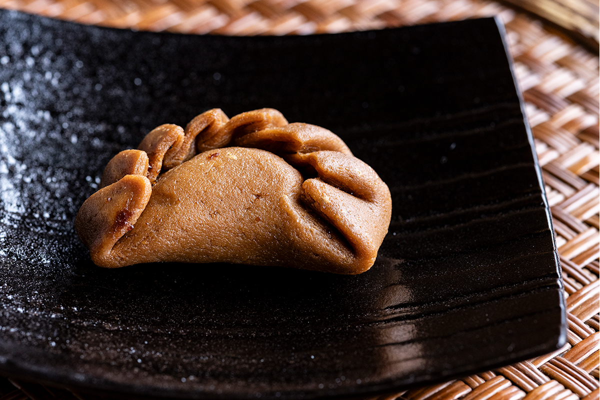
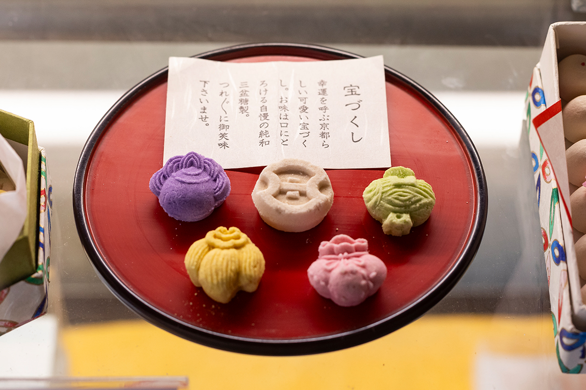
Если взглянуть на историю и состав этой сладости, становится понятно, почему в основе киотских сладостей пряности и почему их добавляют в сладкое до сих пор. Смесь благовоний и форму «Сэйдзё канкидан» не меняли ни разу, а вот гладкая бобовая паста появилась в начинке лишь с середины периода Эдо. Примерно тогда же бобовую пасту стали широко класть в сладости вообще. Поначалу начинкой служили хурма, каштаны или абрикосы, а сахар заменяли солодкой и сиропом из лианы амадзура. С бобовой пастой сладость стала вкуснее, чем тысячу лет назад, но упрощать её для современного вкуса в лавке не собираются.
«Это прежде всего подношение, поэтому мы храним способ, переданный монахом. Перед работой мастер и сегодня очищает тело благовониями. Рецепт передают одному наследнику, и он остаётся тайной»
хозяин лавки
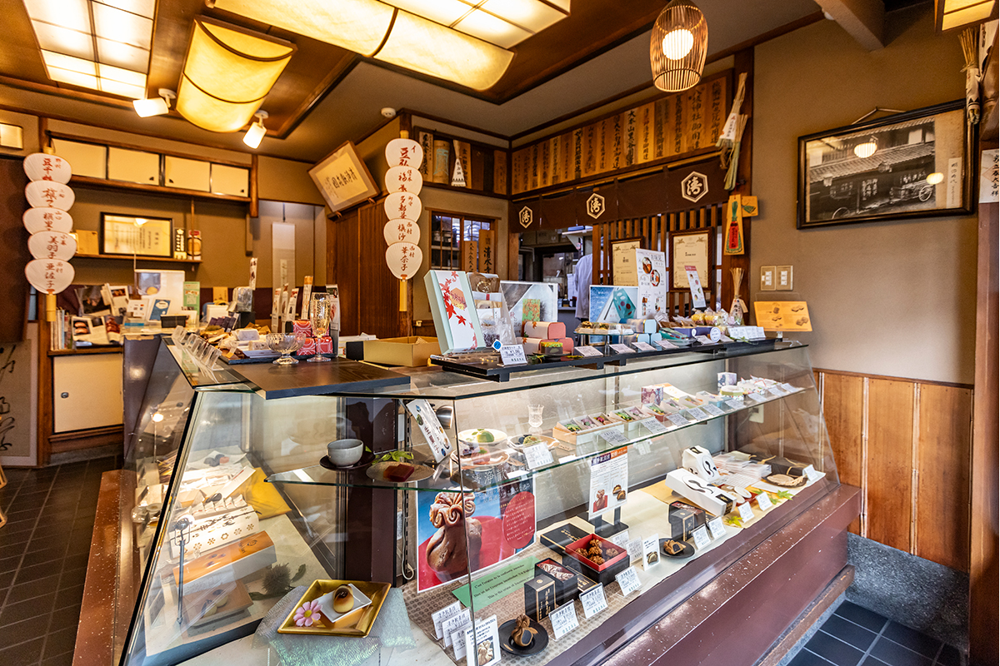
Kameya Kiyonaga
- Адрес
- префектура Киото, Киото, район Хигасияма, Гион, южнее каменной лестницы святилища Ясака-дзиндзя
- Телефон
- +81 75-561-2181
- Часы работы
- 8:30–17:00
- Выходные
- среда (бывают и другие выходные)
Перец
Kagizen Yoshifusa: «Ива-сансё», сладкое с перцем
Главные сладости Kagizen Yoshifusa это «Каги-моти» и «Кикудзюто», но у «Ива-сансё» тоже есть поклонники, которые приходят именно за ним.
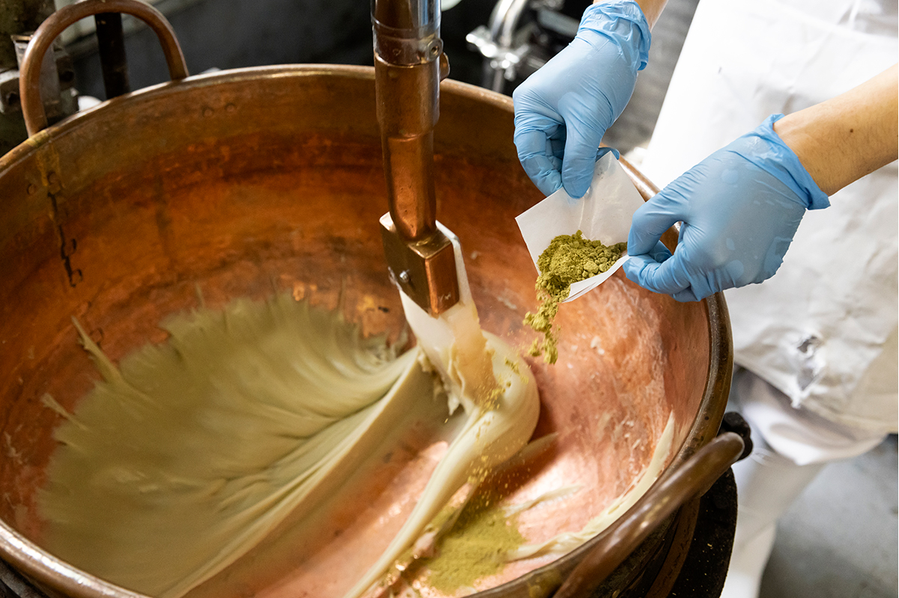
«Думаю, хотелось сделать необычную сладость, какой больше нигде нет, и попробовали сансё, который киотцы так любят»
глава лавки в 15-м поколении
Жители Киото и правда любят сансё, но сладостей с ним на удивление мало. «Ива-сансё» устроен просто: гладкая бобовая паста завёрнута в мягкое тесто гюхи с сансё. Сладость маленькая, но сытная. Перец нарочно добавляют не в пасту, а в тесто, чтобы аромат был мягким. Паста же плотная и достаточно сладкая, чтобы не потеряться рядом с острым вкусом и зелёным запахом перца. При этом острота не перебивает всё остальное. Во рту раскрывается свежий аромат, а послевкусие лёгкое и чистое.
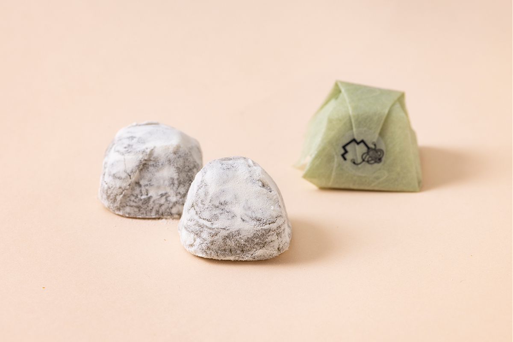
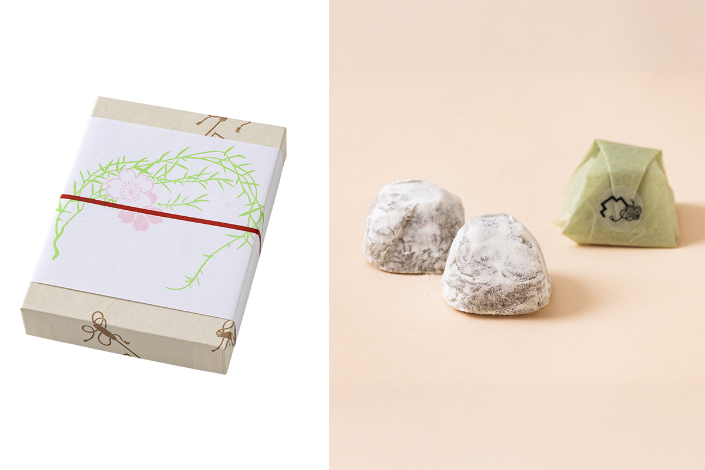
Есть здесь и вторая сладость с пряностью: «Куроита», что значит «чёрная доска». Выглядит она точно как своё название, а на вкус это тёртый имбирь. Обе сладости давно любят в киотских кварталах гейш, и главное в них благородный аромат.
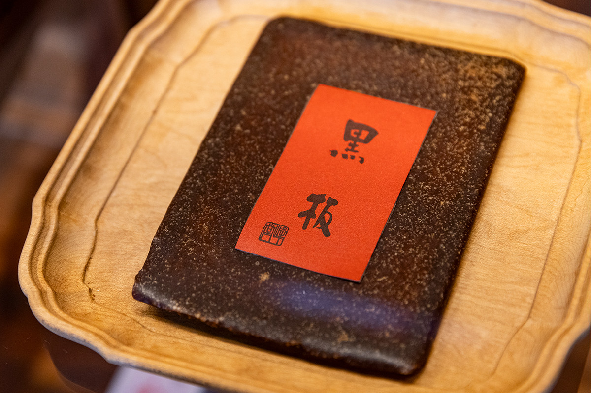
Kagizen Yoshifusa, главный магазин на Сидзё
- Адрес
- префектура Киото, Киото, район Хигасияма, Гион-мати Китагава, 264
- Телефон
- +81 75-561-1818
- Часы работы
- 9:30–18:00
- Выходные
- понедельник (если праздник, то следующий день)
- Сайт
- kagizen.co.jp
Корица
«Кагия Масааки»: японский маршмеллоу с корицей
Долголетия и здоровья люди желали всегда, и эти пожелания доверили сладости «Экидзюто». В неё добавляют корицу, которую используют и как лекарство в традиционной медицине. Название взято из выражения «экидзю эннэн»: продлить жизнь и прожить долго.
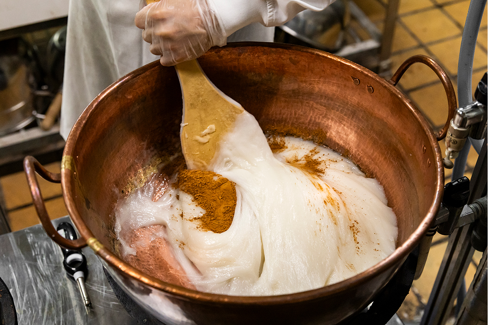
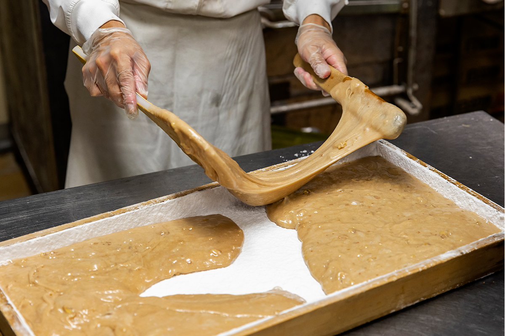
«Кагия Масааки» открылась в 1920 году. Когда здесь начали делать «Экидзюто», точно никто не знает.
«Наверное, лет сто назад. Главная ветвь нашей семьи, кондитерская, открытая в 1696 году. Когда мы, побочная ветвь, приняли её знаменитые сладости, в переданных нам записях уже был состав "Экидзюто"»
хозяин лавки
В записях действительно значатся пряности: «корень коричного дерева» и мак.
«Но дед, учившийся европейским сладостям, заменил мак грецким орехом. А ещё начал добавлять белок, так что текстура, наверное, стала воздушнее и мягче, чем в самом начале»
хозяин лавки
Так сладость с годами стала только вкуснее. Мягкость маршмеллоу хорошо оттеняют хруст и аромат ореха. Если от неё и правда живут дольше, тем лучше.
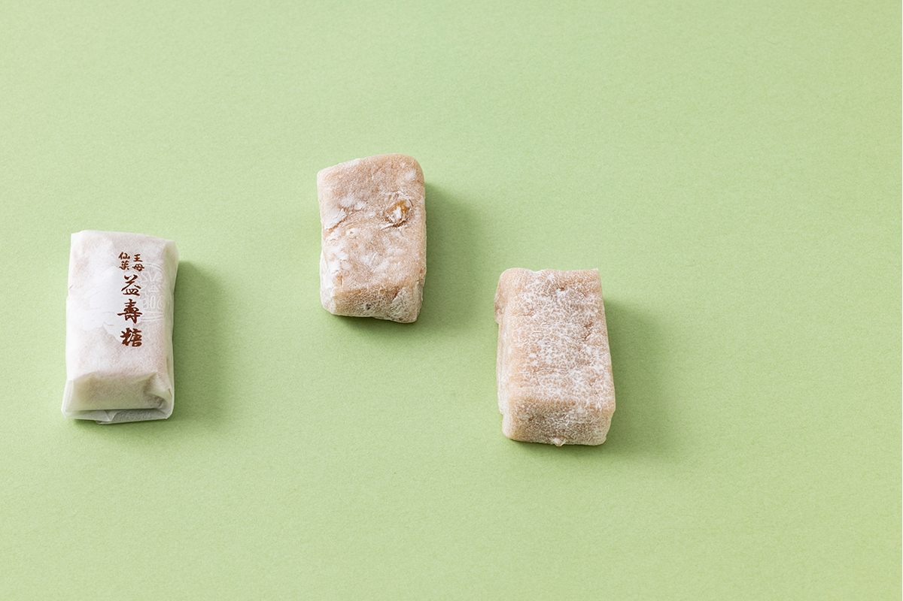
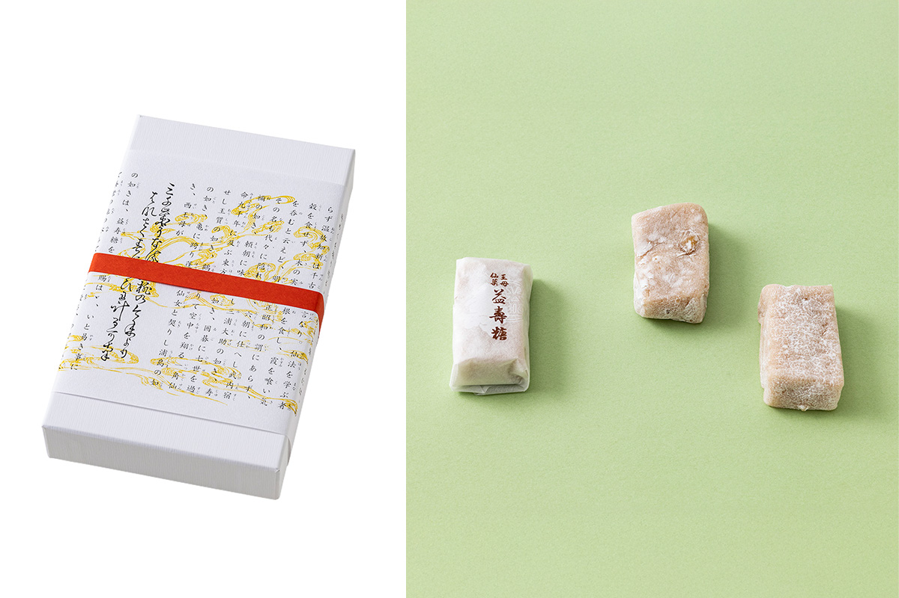
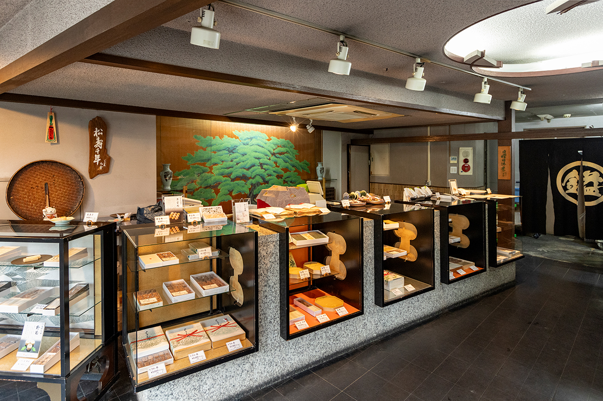
«Кагия Масааки»
- Адрес
- префектура Киото, Киото, район Сакё, угол перекрёстка Хякуманбэн
- Телефон
- +81 75-761-5311
- Часы работы
- 9:00–18:00 (в субботу до 17:00)
- Выходные
- воскресенье
Сисо
Nakamuraken: «Сисо-моти» в листе красного сисо
Nakamuraken известна сладостью «Мугитэ-моти»: в ней сполна чувствуется бобовая паста, которую здесь до сих пор варят на дровах из дуба кунуги. Но если хочется чего-то лёгкого, стоит взять «Сисо-моти». Гладкую бобовую пасту заворачивают в рисовую крупку домёдзи, а сверху в солёный лист красного сисо. Получается гораздо легче обычного моти.
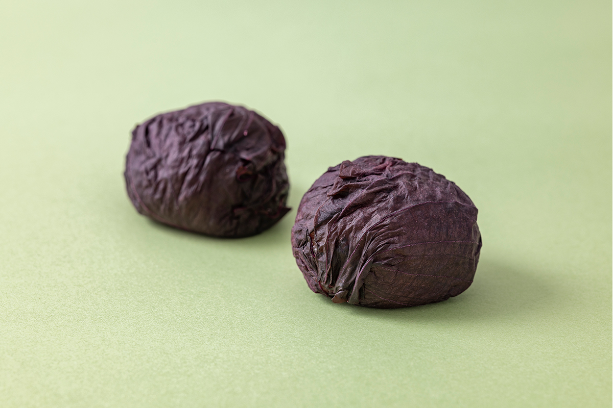
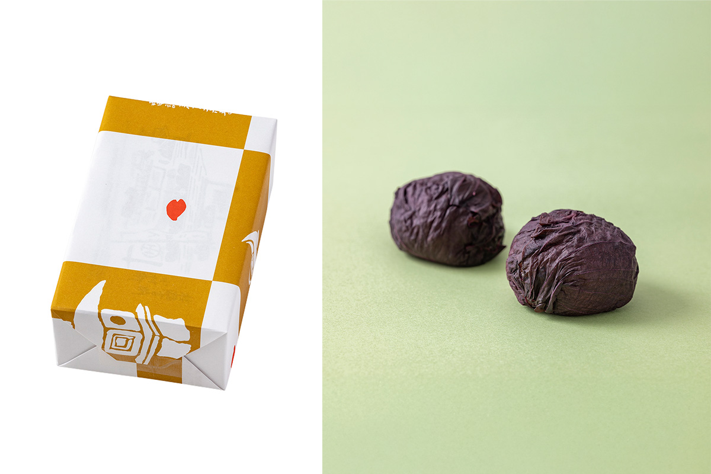
«Сложнее всего правильно вымочить соль из красного сисо. А домёдзи мы берём мелкий, из зерна, расколотого на четыре части, чтобы чувствовалась каждая крупинка. Такой вкус получается только при ручной работе»
хозяин лавки
Говорят, когда отвар из листьев давали больным, к ним возвращались силы, отсюда и название «сисо», «пурпурный лист, который возвращает к жизни». Так что свежесть в голове после «Сисо-моти», похоже, не кажется.
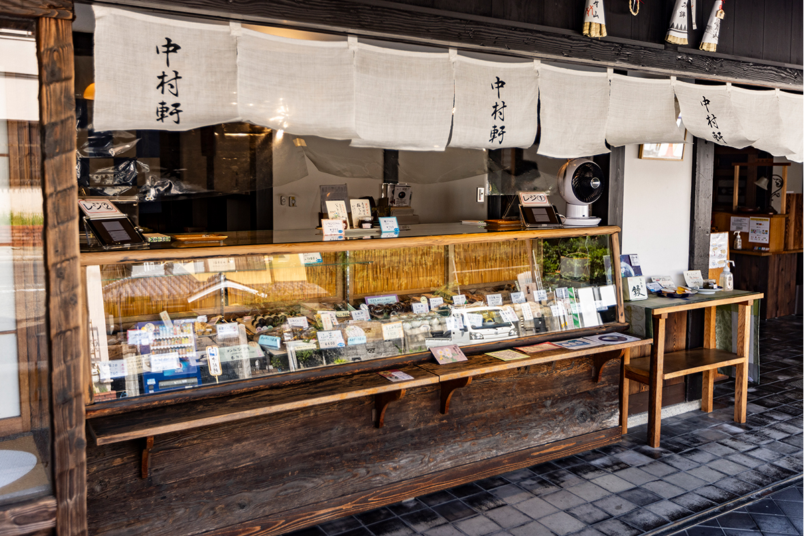
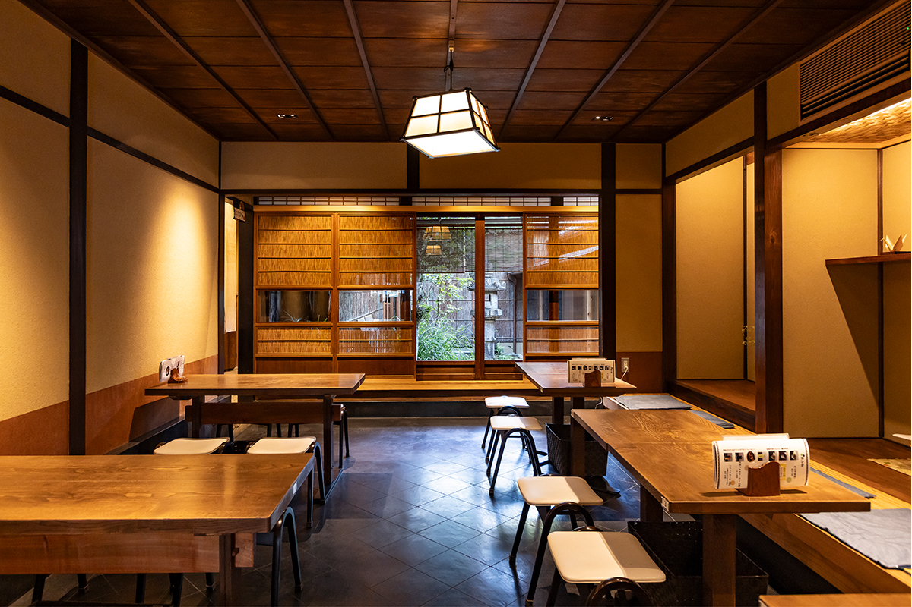
Nakamuraken
- Адрес
- префектура Киото, Киото, район Нисикё, Кацура-Асахара-тё, 61
- Телефон
- +81 75-381-2650
- Часы работы
- 8:30–17:30 (кафе 10:00–17:00)
- Выходные
- среда
Кунжут
Tamaruya: «Сиракавадзи», сэмбэй с золотым кунжутом
По одной из версий, рисовые крекеры сэмбэй привёз в Японию из Китая всё тот же Кукай и передал их киотским кондитерам. В Киото Tamaruya печёт сэмбэй вручную. Главный товар лавки это «Сиракавадзи», сэмбэй с кунжутом. Форм две: сначала появились длинные полоски, позже круглые.
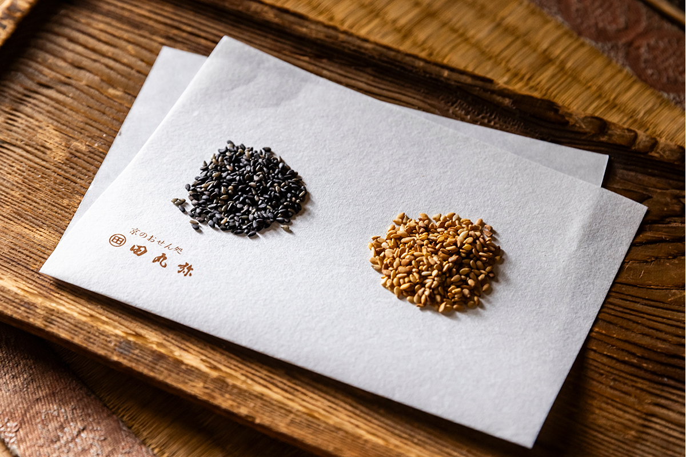
«Состав одинаковый, но разницу чувствуешь, как только попробуешь»
хозяин лавки
У одного сильнее вкус чёрного кунжута и упругий хруст, другой удивительно тонкий, с мягким ароматом золотого кунжута. По словам хозяина, класть так много золотого кунжута первыми начали именно здесь, потому что хотели сделать лучший кунжутный сэмбэй. Этот сэмбэй любил и император, так что стоит сравнить обе формы.
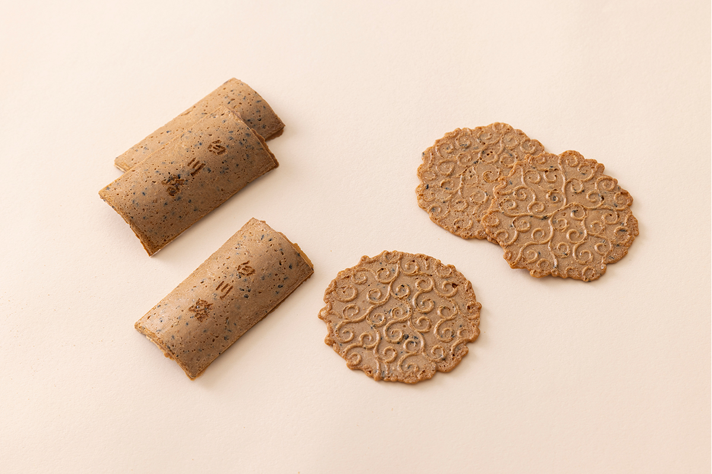
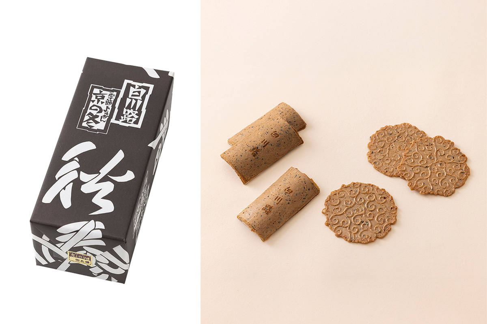
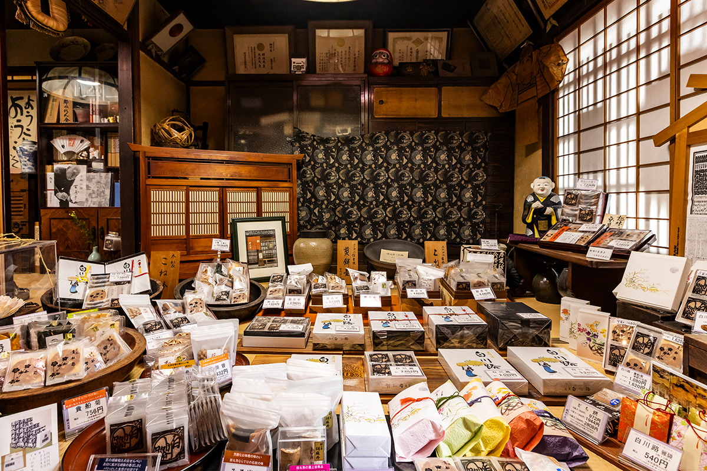
Tamaruya, главный магазин
- Адрес
- префектура Киото, Киото, район Кита, Ситику-Хигаситаканава-тё, 5
- Телефон
- +81 75-491-7371
- Часы работы
- 9:00–17:00
- Выходные
- воскресенье, праздники
- Сайт
- shirakawaji.com
Юдзу
«Цубонэя Риссюн»: целый юдзу с ёканом внутри
Основатель «Цубонэя Риссюн» учился ремеслу в известной киотской кондитерской. Сегодня лавку ведёт второй хозяин: он хранит вкус отца и при этом придумывает новые сладости.
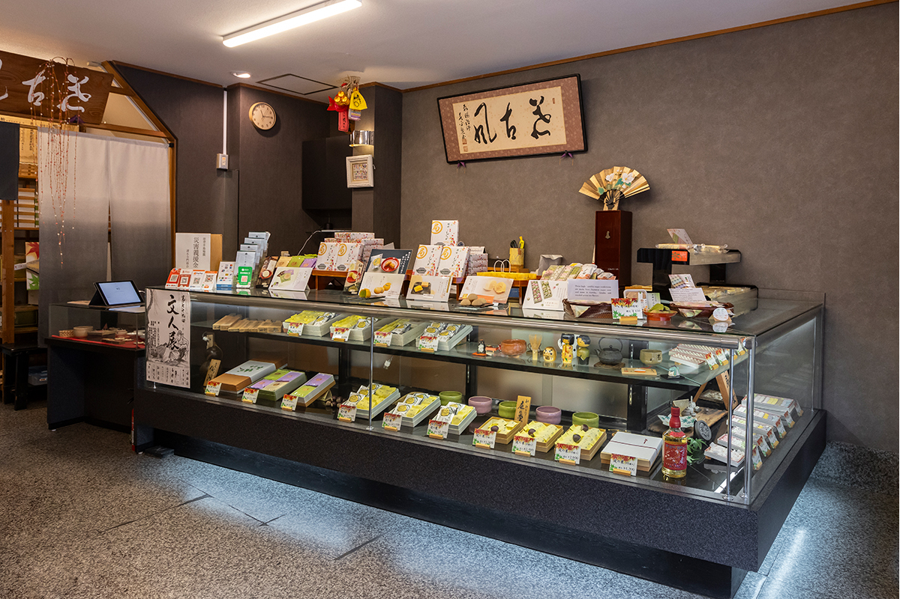
Одна из таких новых сладостей «Юдзу-сидзуку». Из юдзу вынимают мякоть, плод вымачивают в сиропе и заливают внутрь ёкан, в который замешана паста из юдзу.
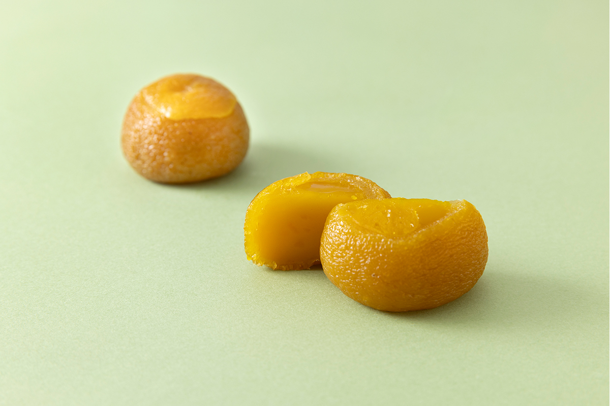
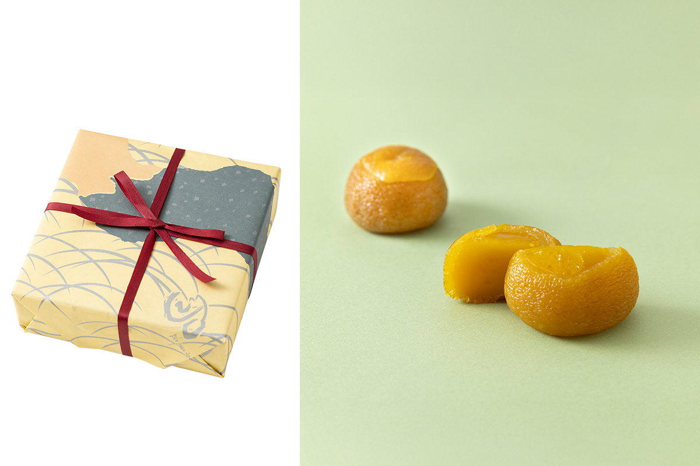
Берут только хана-юдзу диаметром около 5 см, с тонкой кожурой и слабой горечью. Похожий на мячик тэмари плод не только красив: этот размер как раз подходит, чтобы кожуры и ёкана было поровну. Мягкая кожура жуётся как мармелад, ёкан внутри свежий и лёгкий. Сладость хвалят даже те, кто не любит ёкан. Её можно разрезать на шесть частей и подать к кофе.
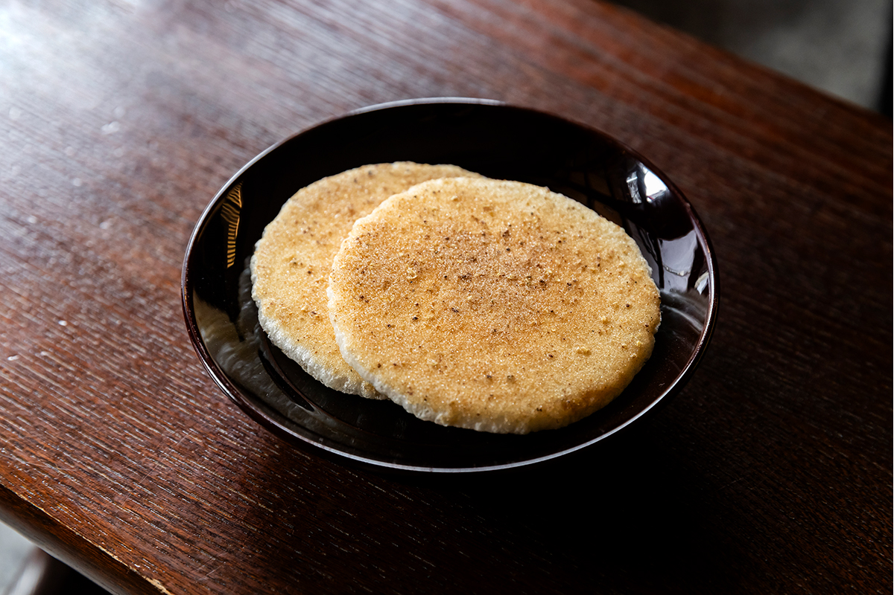
«Цубонэя Риссюн»
- Адрес
- префектура Киото, Киото, район Хигасияма, Годзёбаси-Хигаси, 6-583-75
- Телефон
- +81 75-561-7726
- Часы работы
- 11:00–17:00
- Выходные
- нерегулярно
Фото: Юки Сато.